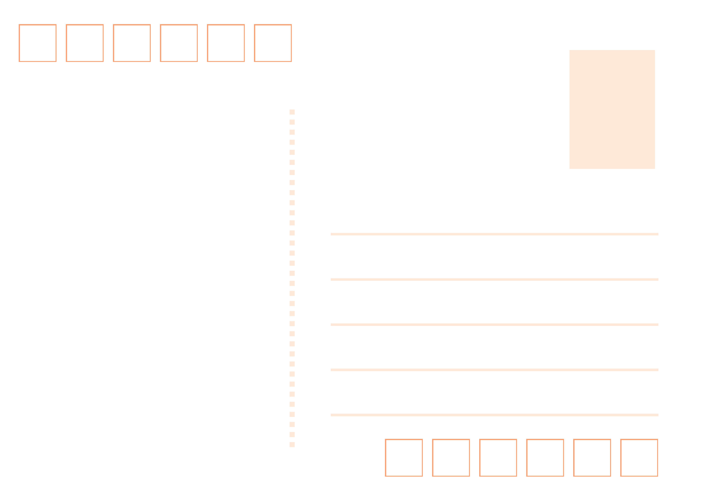

Stories & Memories
記錄生活碎片、影視觀後感與旅行的軌跡，將靈光乍現的瞬間凝固於此。
Featured Writings


Words
「有時候，靜止不動，也是一種前進的方式。」
“Never enough.” 那不是貪婪，而是對生命純粹可能性的無盡索求。
「醫學是一門需要冷靜理智的科學，但面對生命時，請記得保留一絲文學的浪漫。」
「把普通的日子過得精緻，本身就是一件很了不起的藝術。」
Featured Work
My First DIY Postcard
將鏡頭捕捉到的日常風景，轉化為實體的明信片設計。從排版到印刷，記錄下視覺傳達的初步嘗試。

